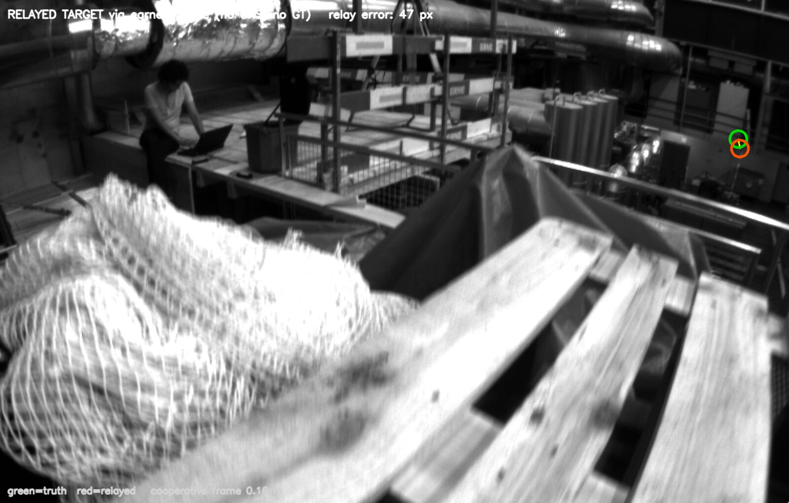
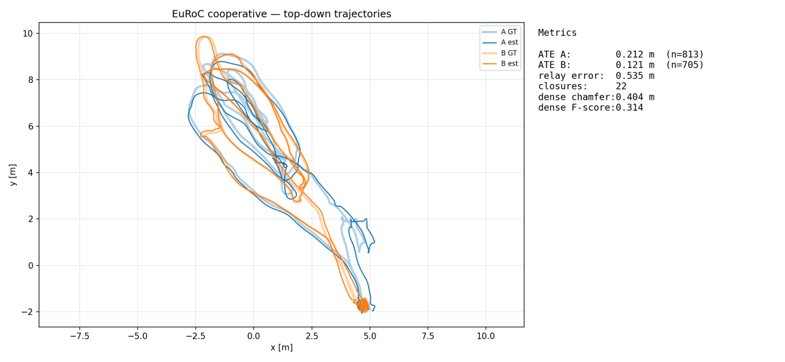
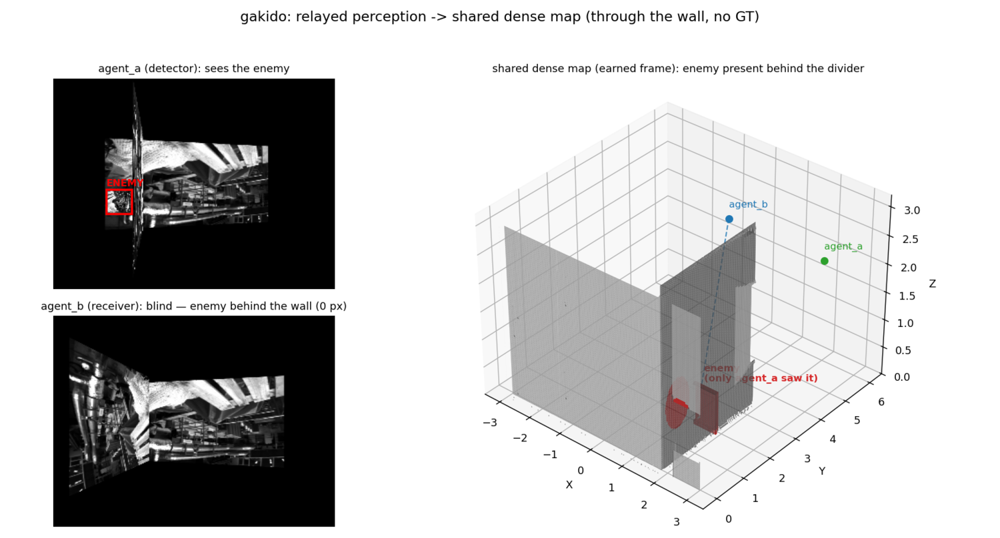
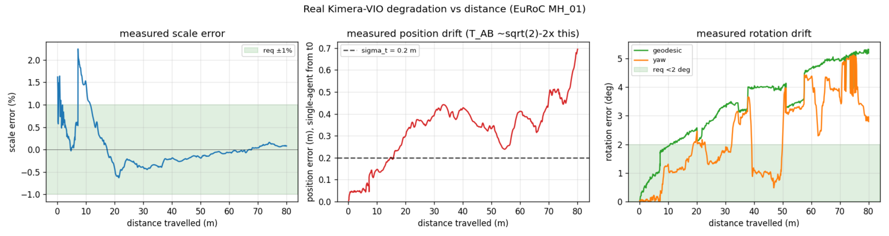
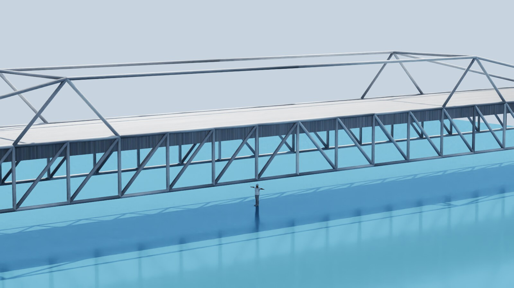

1.The metric is relay, not ATE
Multi-robot SLAM systems (Kimera-Multi, DOOR-SLAM, Swarm-SLAM, COVINS-G) estimate a shared frame online from inter-agent loop closures, but they score themselves on trajectory and map accuracy, not on whether a teammate's detection lands correctly in your view. V2X cooperative perception measures perception utility directly, but assumes GPS/RTK hands every agent the shared frame for free. Rinnegan's contribution is the composition: the shared frame is estimated peer-to-peer with no server, and the headline metric is relay utility: where a teammate's detection renders in your view, in pixels and meters. Map merging is plumbing, not the product.

2.Per-agent pipeline
Each agent fuses time-synchronized stereo cameras and IMU into a 6-DoF pose estimate, then contributes to a dense shared map rendered into a heads-up display:
- Synchronizer (C++): time-aligns stereo frames + IMU into bundles (273 sync-fps on EuRoC, 3682/3682 frames).
- Kimera-VIO: stereo-inertial odometry; MH_01 ATE 0.216 m RMSE.
- Cooperative back end: self-discovered inter-agent loop closures feed robust pose-graph optimization (GTSAM / Kimera-RPGO).
- Dense reconstruction: voxel-hash TSDF in C++/CUDA; the raycast HUD renders the shared map at 43 FPS @ 640×480 (105 FPS @ 320×240).
The core is C++ with a pybind11 bridge, so the Python eval harness and scenario tooling drive the production pipeline rather than a reimplementation. (The name: each subsystem is nicknamed for one of the Six Paths of the Rinnegan, a shared visual ability across bodies.)
3.Measured results
- Real-data cooperative relay, no ground truth anywhere: two EuRoC sequences run as two agents: self-discovered inter-agent closures recover the shared frame, relay error 0.159 m vs 0.353 m without cooperation (MH_01×MH_02).
- Through-wall relay: a real Faster R-CNN detection of a person behind a solid wall, relayed into a fully-occluded receiver's view at 0.14 m (GT-exact frame); the earned-frame corner-scene version lands at 0.6 px / 0.07 m.
- System budgets on real VIO: yaw drift is the binding constraint (~5° over 80 m on Kimera/EuRoC against a ~1–2° requirement); holding a 0.2 m relay budget requires an inter-agent loop closure roughly every 7 m.


4.When cooperation hurts, and the gate that stops it
An honest negative result, measured and root-caused: under correlated per-agent drift, pose-graph optimization can make relay worse than raw odometry. Rinnegan characterizes the regime (cooperation helps on overlapping trajectories, hurts on dissimilar ones) and runs a GT-free do-no-harm trust gate that keeps cooperation from ever degrading below odometry (helps on 3/4 EuRoC pairs, falls back cleanly on the 4th).

5.Simulation & comms
Multi-agent scenarios run in NVIDIA Isaac Sim (bridge inspection and through-wall scenes with per-agent cameras) alongside real data from EuRoC and a RealSense D455. Each agent's stack runs in its own container, communicating over ROS 2 / FastDDS; the comms-dropout demo has one of three agents go dark mid-mission and reconcile on reconnect.

6.Toward hardware
The deployment path: learned-matcher inference via TensorRT, live OAK-D stereo-inertial capture, an XR HUD consumer, and Jetson-class onboard compute, with a 7-inch 6S FPV quadrotor as the flying platform. Interfaces are ROS 2 end-to-end so the sim-validated stack carries over unchanged.